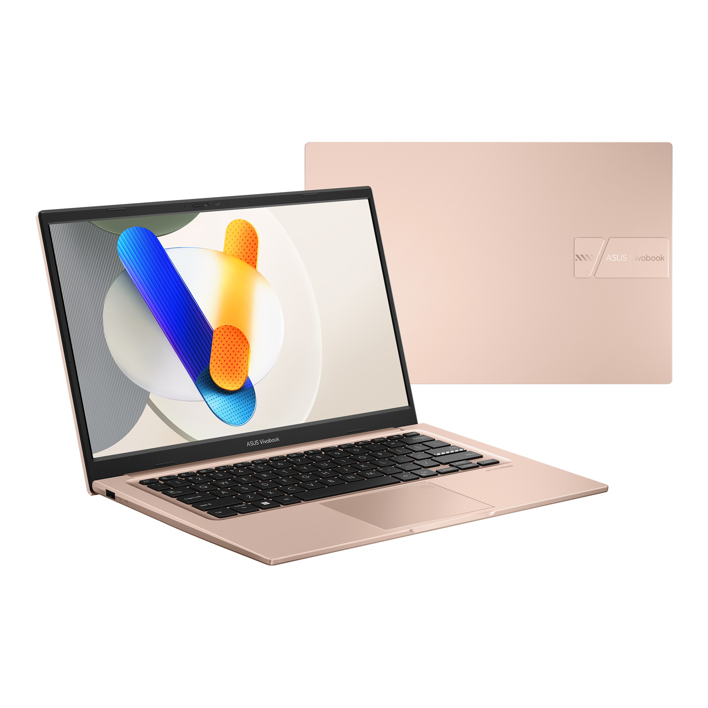

Minimal 8GB + SSD
RAM 8GB dan SSD membuat tugas, browser, serta aplikasi terasa lebih responsif.
Temukan laptop yang cocok untuk belajar, bekerja, membuat karya, atau bermain—dengan rekomendasi yang mudah dipahami dan sesuai budget.
50.000+ orang sudah terbantu menemukan laptopnya

ASUS • FAVORIT MAHASISWA
Core i5 · 8GB · 512GB SSD
Harga referensi Juli 2026
Harga referensi yang diperbarui setiap bulan. Pilih toko untuk mengecek dan membeli laptop pilihanmu.
Harga dan ketersediaan dapat berubah di marketplace. Gunakan tombol toko untuk melihat harga terbaru sebelum membeli.
Gunakan filter atau cari langsung berdasarkan nama, merek, dan spesifikasi.
Rekomendasi jujur
tanpa dipengaruhi iklan
Coba naikkan budget atau kurangi filter yang dipilih.
Jawab dua pertanyaan singkat. Findlap akan mencarikan rekomendasi paling masuk akal untukmu.
Pilih budget dan kebutuhan untuk mulai.
Hal kecil yang sering terlupakan, padahal penting untuk pemakaian jangka panjang.
RAM 8GB dan SSD membuat tugas, browser, serta aplikasi terasa lebih responsif.
Core i5 atau Ryzen 5 ideal untuk multitasking. Untuk gaming dan editing, perhatikan GPU.
Laptop 14 inci dan baterai 6–8 jam lebih nyaman dibawa ke kampus setiap hari.
Pastikan garansi dan service center tersedia agar lebih tenang setelah pembelian.